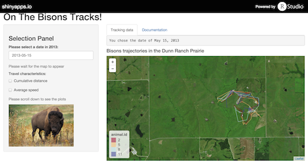

“Let's take a trip to the wild and follow bisons for a while ...”
Over the past few years, bisons have been re-introduced to the Dunn Ranch Prairie, in Missouri. Some of them were collared by Stephen Blake's team, and data on their movements were collected and graciously made available to the public through the Movebank.
The "On the Bisons Tracks!" application is a tool that allows the user to explore this dataset through a map visualization and the display of travel characteristics directly extracted from the dataset and computed from it.
For the sake of speed and ease of understanding, the data available for exploration through this app correspond to those collected in 2013. The animal IDs have been rescaled to integers between and 1 and 12.
